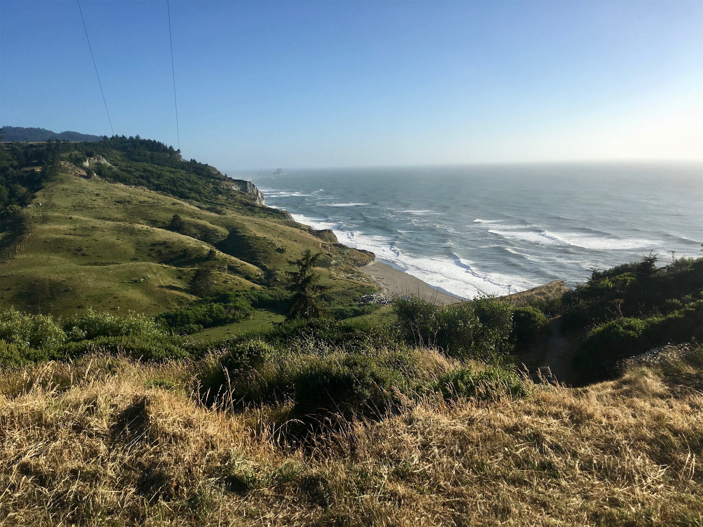
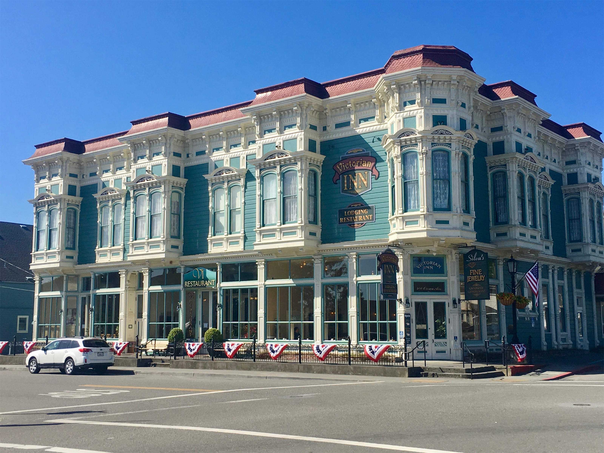
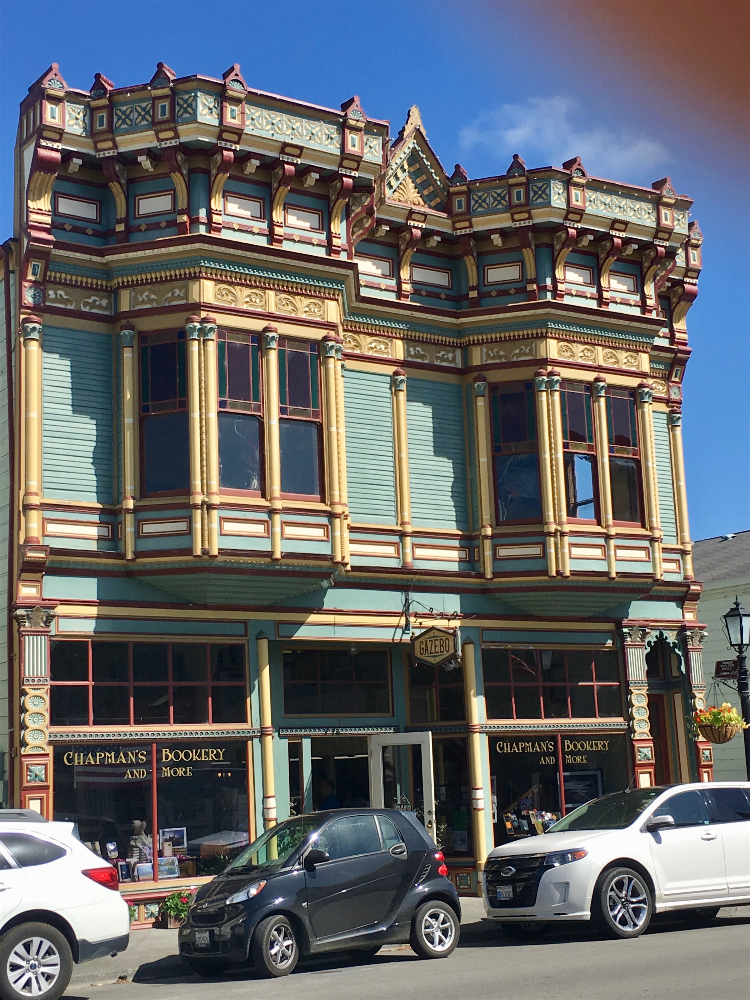
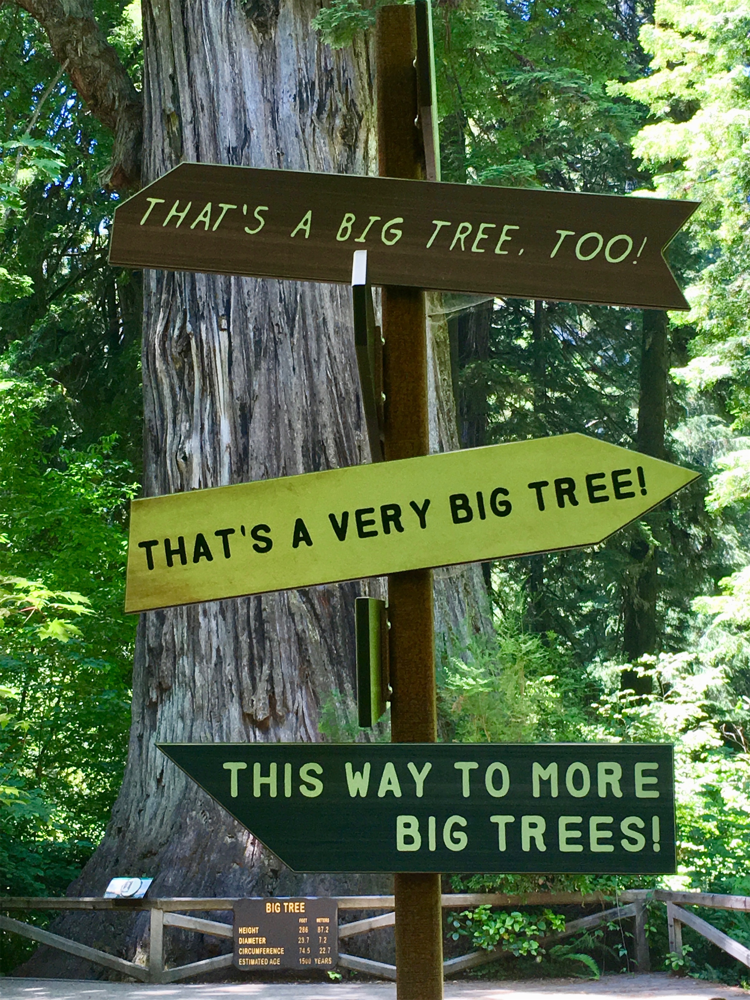
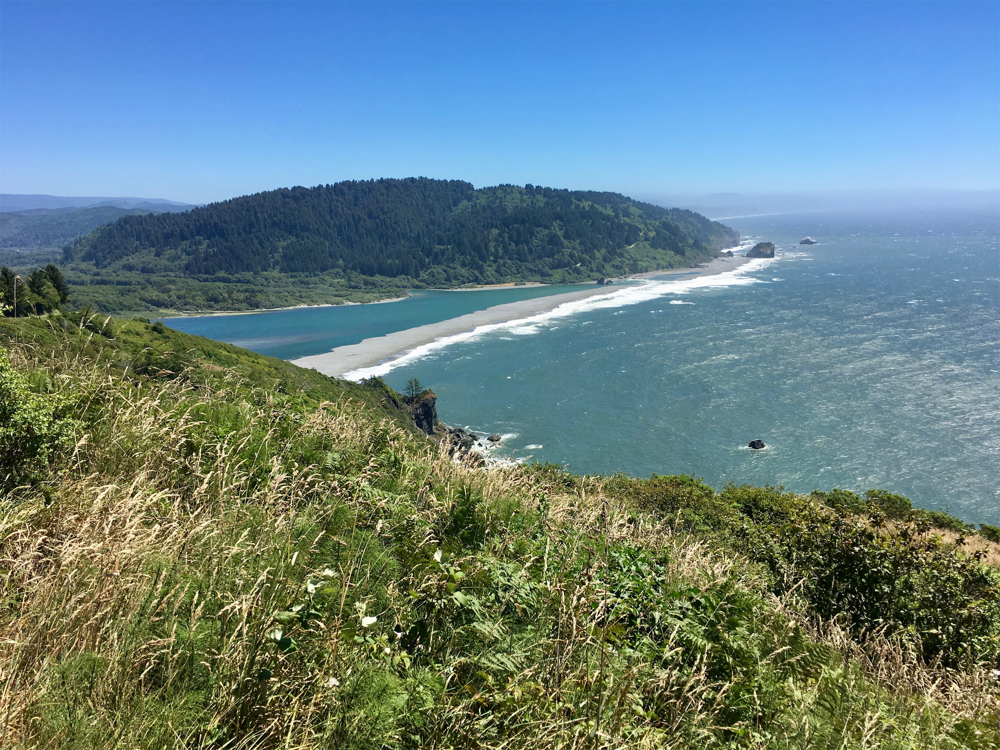

Monday, Jul 2, 2018, 12:17 PM PDT
Thomas H. Kuchel Visitor Center, Orick, CA, United States
68°F Sunny
68°F Sunny
![]()
6/30 Lassen Volcanic NP, CA -> Redding, CA 48 mi, 1 hr
7/1 Redding, CA -> Ferndale, CA 170 mi, 4.75 hr
7/2 Ferndale, CA -> Kuchel Visitor Center, CA 63 mi, 2.75 hr
7/2 Kuchel Visitor Center, CA -> Crescent City, CA 50 mi, 3.75 hr
Trip Total: 5,671 mi
Leaving the Lassen Volcanic park via the northwest entrance, we headed west back down into the hot Sacramento Valley and our overnight stay in Redding, CA. We saw 14,000 ft Mount Shasta, covered in snow, to the north of our route. In the morning, we continued west through the very scenic and curvy Shasta Trinity National Forest on Highway 299, finally reaching the Pacific, which greeted us with sunny and low 60s weather. We headed south along the coast to our next overnight stay at the very interesting and quaint town of Ferndale, which is a major dairy producer and famous for its Victorian-style historic downtown. We stayed at the unique Ye Olde Danish Inn, a B&B in our own building, but without the breakfast. It had a great view of the farmland and deer all around. Before sunset, we drove to a beach overlook.
The next morning, we headed north on Highway 101, entering the Redwood National Park, which is also composed of several state parks. We went on a 2-mile hike on the Foothills trail, immersed in dense stands of coastal redwoods, ferns, and moss. The redwoods are the tallest living things on earth, but not as wide as the Sequoias. We continued on a scenic drive through the forest, eventually finding the overlook where the Klamath River meets the Pacific.








